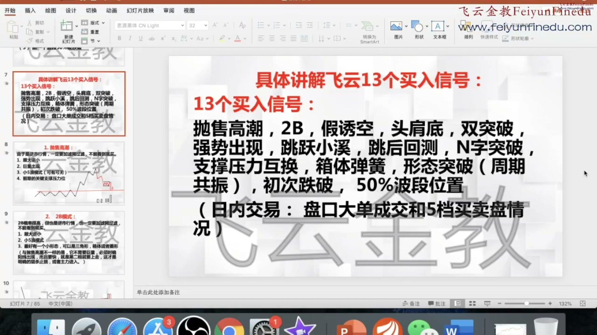
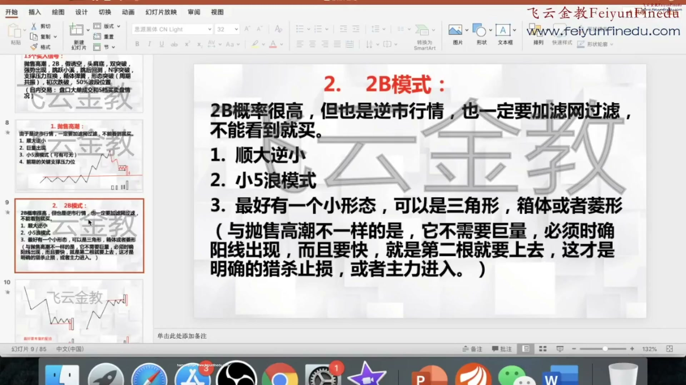
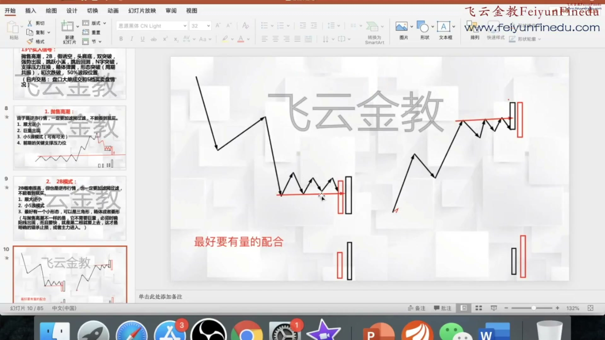
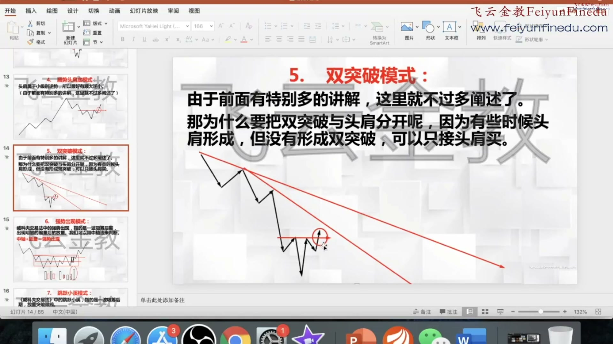
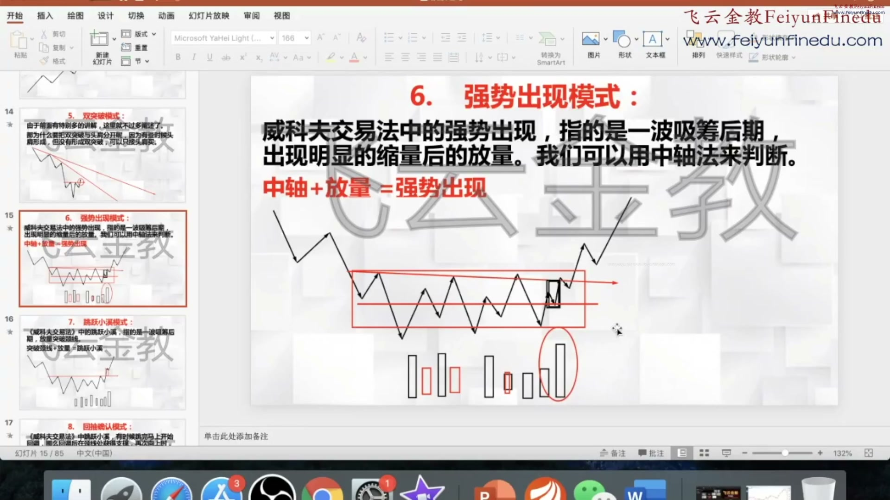
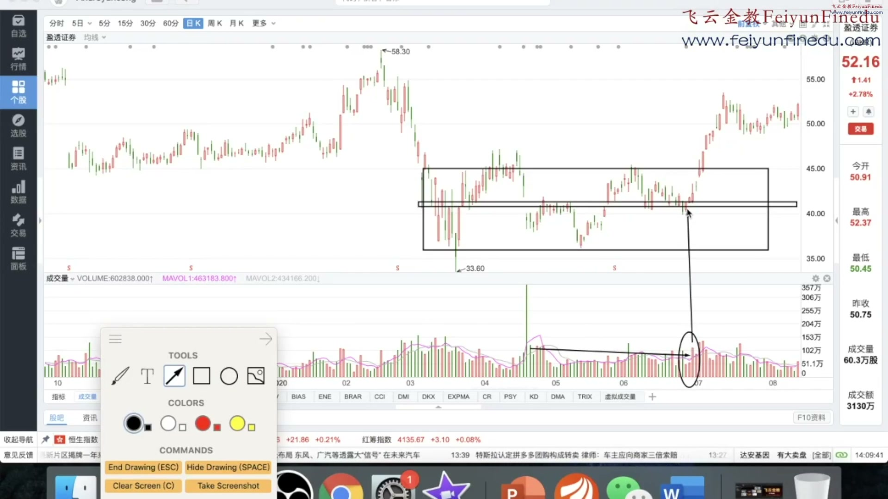
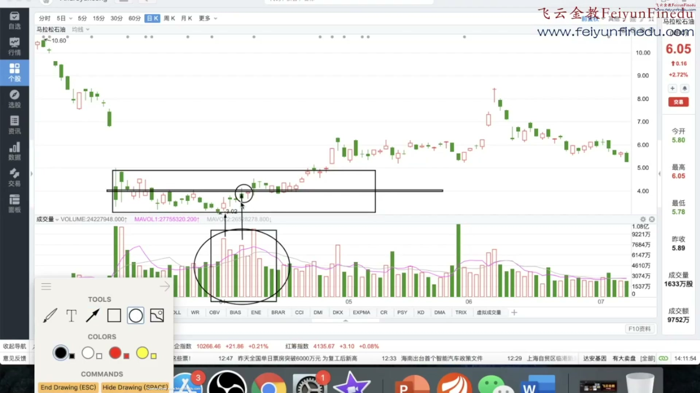
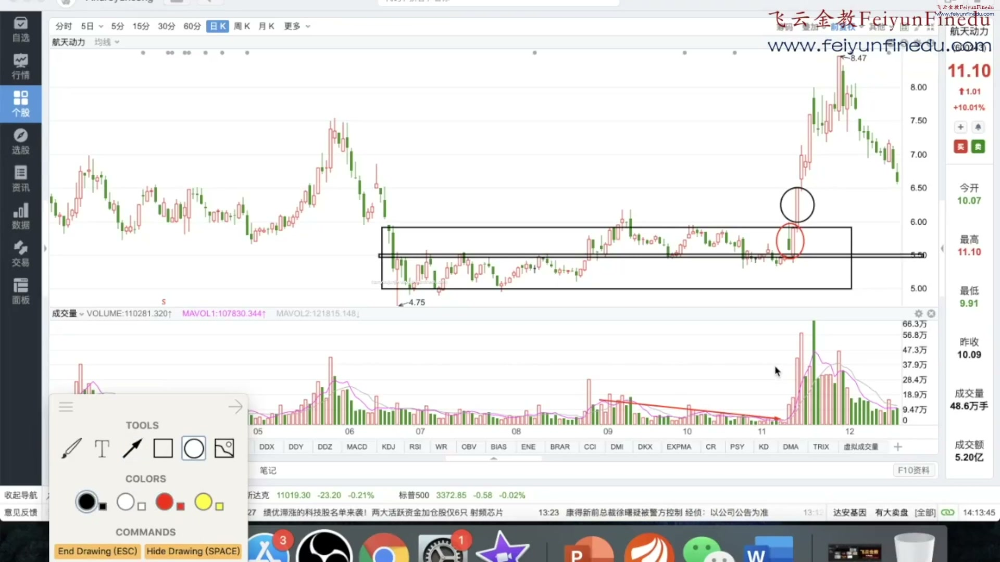

00:00:35 · 35.000s

在我们被过滤掉的行情之内 我们再考虑它的趋势是什么 我们是要做多还是要做空 第二它的位置在哪 我们在什么地方去做多还是做空 第三就是等待我们更小级别的周期 比如你是做日线的 那么我们现在在60分钟 15分钟 或者半小时里面去找我们的信号 好这样子一级一级推倒下来 就可以做了 就可以买入了 我们这边总结了13个买入信号啊 13个买入信号啊 这13个买入信号呢 我们就一个一个的讲 有的它的概率是很高的 有的不是特别的高 但是呢 这就是我们认为啊 我们认为最 总之我们这试验的心血啊 最好的一些方法 好我们再给解释一下 我们这边有个水印呢 实在不好意思 因为大家都是付费会员嘛 我们也不希望我们的东西流出去啊 我们这边有个水印
00:05:25 · 325.000s

但是呢我们还是要把它提出来 第一个你遇到这种情况 你可以注意了准备要买入了 好这是第一个抛售高潮 第二个就是我们的2B模式 2B模式我们前面非常详细的讲过 大家可以去看我们的策略类企 非常详细举了很多案例 2B模式是概率最高的一个模式 但是呢它也是逆势行情 所以呢我们也要加上上面的这些滤网 比如顺大逆小啊 小无浪模型啊 而且最好要有个小形态 这个小形态呢 可以是三角形 可以是相提 可以是菱形 那么它的区别在哪呢 它与抛售高超不一样 它不需要巨量 但是必须要明确的阳线出现 而且要快 就第一根阴线打下去 第二根阳线马上上去 因为这个才表示是明确的 猎杀止损 或者阻力进入
00:05:59 · 359.000s

可以是菱形 那么它的区别在哪呢 它与抛售高超不一样 它不需要巨量 但是必须要明确的阳线出现 而且要快 就第一根阴线打下去 第二根阳线马上上去 因为这个才表示是明确的 猎杀止损 或者阻力进入 好 我们来看一看 我们再来看看 有没有2B的一个模型的例子 下面呢 就跟大家讲过了 你看12345浪下来 一个小平台 第一根k线暴跌 第二根k线马上拉起来 好那比如这个也是啊 往上涨啊 当然就后面再讲啊 也是第一根k线上去 第二根马上打下来啊 最好有量的配合 就算没有量的配合 其实也无所谓 左边不一定是巨量 但是右边往上拉的 最好要有量啊 最好要有量 因为只有有量 才能够明确的表示 你是在做一个 是吗 在做一个
00:21:20 · 1280.000s

进行配合 好这就是我们头肩 前面讲了很多了 好我们再看一下 这个我们的双突破 当然双突破 这个我们前面 也是讲了特别的多 非常详细的讲 我们不过多阐述 我们为什么要把 头肩和双突破分开呢 因为就是说 有些时候 比如这个地方 它有头肩 它还没有突破 是不是 比如这个图形 它有头肩了 你可以按照头肩来买 也不是一定要 拿到双突破才买 如果头肩和双突破 正好完美的结合 那当然最好不过了 那如果只有头肩 你也可以让头肩来买 有些时候它没有双突破 就有2B的 你看2B来买 它没有啊 它没有这个 它没有这个 这个其他的一些信号啊 那么你就双突破还没有出来 是吧 有些时候它们是完美的重合的 好 我们再来看看一些双突破的例子啊 我们就只举两个例子就可以了
00:26:40 · 1600.000s

它可能会形成2B 它也有可能会形成 我们刚才讲的假突破 它也有可能会形成双突破 这是一波一波的来的 当然它有些时候 不行的双突破 它就走一个相提 那么我们就在箱体里面去找强势出现 好强势出现怎么办 第一个它就是威科夫的强势出现 指的是一波吸筹的后期 出现明显的缩量后的放量 我们可以用中轴法来判断 中轴加放量就等于强势出现 有下面这幅图 在最后要拉伸之前 突然进行放量 而且在中轴之上 那么就是强势出现 好我们来看强势出现的买点 这个主要是股票 我们找一找股票 好我们举这个例子 这是一个美国的股票 我们举一个美国的 举一个中国的 我们大家可以看到 它这个你就没有办法用 什么双突破 你可以用双突破 比如这个地方你可以用双突破
00:27:36 · 1656.000s

那么这个双突破 可能在这就走了 是不是 好 它就回来开始怎么办 就走一个箱体 在这走一个箱体 那么走一个箱体 我们在哪买呢 第一个 涨到箱体的中轴 箱体的中轴找到了 好 箱体的中轴找到之后 我们就看 这一波它什么时候出现一个放巨量 这个时候出现一个放巨量 巨量放出来 就是这一天巨量又放出来 然后又在这个中轴之上 然后第二天好像又是放了一个巨量 在中轴之上 这个位置对不对 反正没关系 大概是这个位置吧 就算这吧 那么这两个就是我们的强势出现 又在中轴之上 又在一个盘整期吸筹完毕 那么我们就可以买 它的关键就是放巨量 活不中轴 好这是一个例子 我们再来看另外一个例子
00:28:58 · 1738.000s

那么在箱体里面 实际上也是可以买的 我们找到箱体的中轴 找到之后 我们看什么时候 它的量放的比较大 我们还是能够看得出来 这段时间量是不是放的比较大 很明显 这时候放量放的比较大 它底部放量还敢不敢买 我个人认为暂时不要买 因为底部放量 你不知道它到底是真量假量 但是只要是在中轴之上的放量 比如这个线 当然我们画的到时候 是不是中轴肿瘤 中轴之上的放量 只要是中轴之上的放量 其实都是可以买的 大家可以看到 所以这些点位都是买点 你买完了之后 你止损是在下面 你看后面这一波 是不是就整个的拉伸上去了 是吧 好你跳跃小溪之后 你再去加仓都可以 好这是美国的股票 我们再举你中国的股票 好我们来看一个中国的一个股票例子 那大家看如果这个股票
00:29:50 · 1790.000s

我们把它视为下面是一个吸筹区 整个区是吸筹区 是一个吸筹区 我们一般的买点是突破之后跳跃小息 是不是 但是实际上它只要它的中轴之上 用我们的办法 用我们的强势出现中轴法来判断 你看它只要是中轴之上 而且放量 它实际上这个地方就可以买了 是不是 你看这一段时间是明显的缩量 它开始放量的中轴之上放量的时候 就是在这个时候就已经是中轴 这个时候就已经是中轴之上的一个放量了 后面又来了一个中轴之上的放量 就可以先买了 不要着急 先不要怕 先买了之后 在下面设一个止损 后面跳位小心 你再去加仓 后面再来加仓都可以 这样子就可以让你早买 早买的好一点 我们再来随便看一个股票 好我们来看这个股票